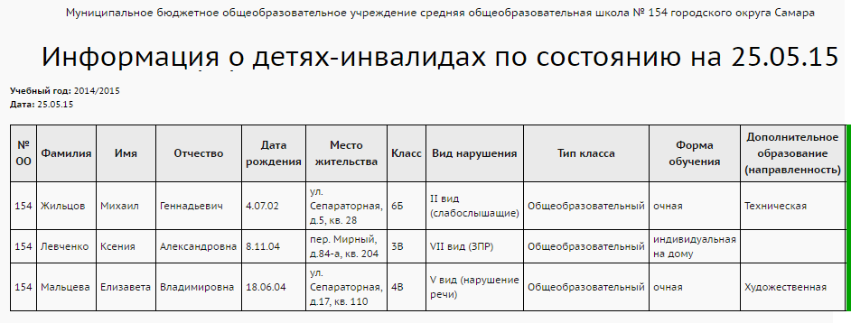
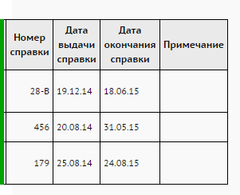

Отчёт предоставляет список детей-инвалидов в образовательной организации. Для того чтобы учащиеся попали в отчёт, в личных карточках учащихся в группе полей "Инвалидность" в поле "Группа инвалидности" следует указать любое непустое значение из списка:
| · | Группа 1
|
| · | Группа 2
|
| · | Группа 3
|
| · | Ребёнок-инвалид.
|
Особенности вывода некоторых полей отчёта:
| · | "Вид нарушения": выводится значение из решения комиссии типа ПМПК, которая соответствует дате для отчёта;
|
| · | "Номер справки", "Дата выдачи справки", "Дата окончания справки": выводятся значения из решения комиссии типа МСЭ.
|
Пример отчёта:

 |